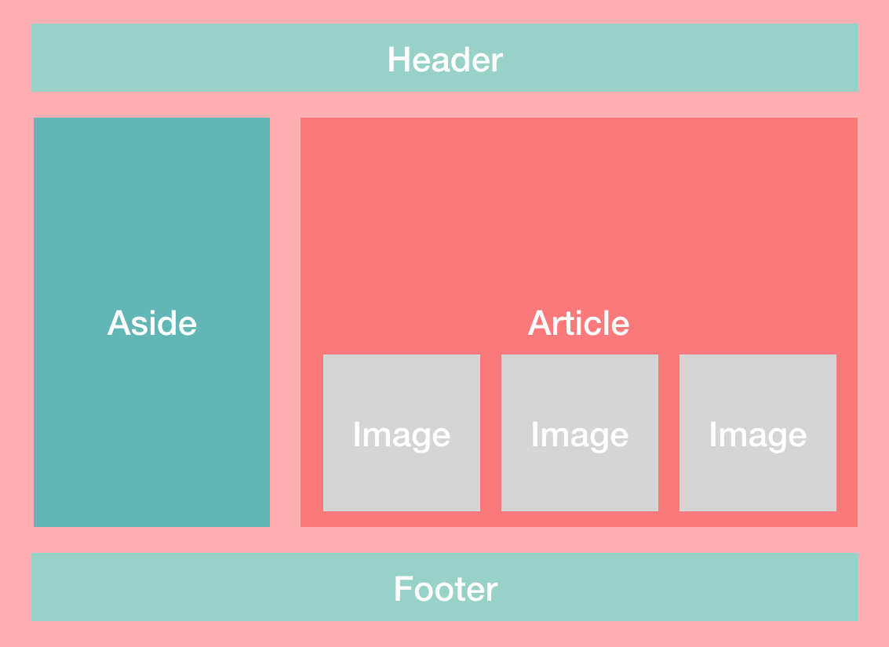
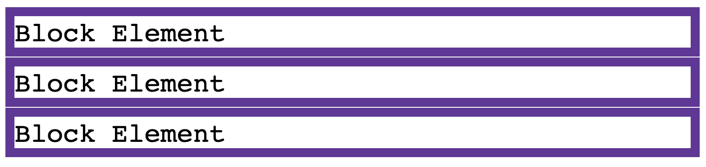

In a webpage, different elements of the page can either be placed next to each other or on top of each other. In order to understand the different between inline and inline block, we first have to understand the different between block and inline.
A webpage is made out of multiple boxes placed strategically to create what you see on the screen.
These boxes are either on the same line as each other or stacked on top/on the bottom of each other (vertically).
Block display is when boxes are stacked vertically. Each box starts on a new line and no boxes are on the same line as each other. Think of block display as a one lane road. Cars travel behind each other, one after the other but are never side by side.

Inline display is when the boxes are on the same line as each other and are side by side. Each box starts right after the other on the same line. Think of inline display as a multi-lane road. Cars can travel right next to each other.


Another difference between block and inline is that in block display you are able to change the height and width of the box. You can make the box bigger, smaller, wider and taller. However, in inline display, you generally aren’t able to change the height and width of the box.


Now we know the difference between block and inline display, we can talk about inline block.
Inline block is when boxes are able to be placed next to each other on the same line (like in inline) but these boxes are also able to change in shape (like in block). Inline block takes elements from the inline and block display functions to create a hybrid of both.